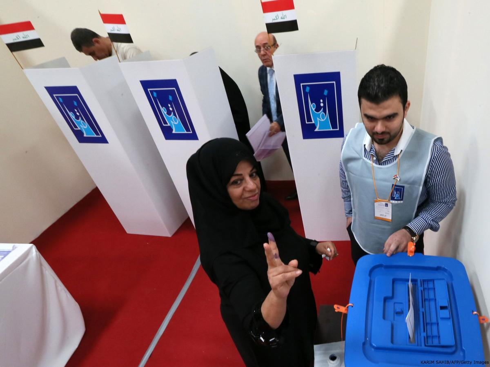

معیارهای ارزیابی سیستمهای انتخاباتی
نویسنده: آندره بله
انتخاب یک سیستم انتخاباتی بر دو دسته قضاوت مبتنی است: قضاوتهای تجربی در مورد پیامدهای احتمالی گزینههای مختلف، و قضاوتهای هنجاری درباره "خوبی" یا "بدی"، و "اهمیت" یا "پیش پا افتاده بودن" این پیامدها. در این مقاله به بُعد دوم این مسئله میپردازیم.
سیستم انتخاباتی را چنین تعریف میکنیم: مجموعهای از قوانین و مقررات که کارشان اداره فرایندی است که درآن نظر شهروندان در مورد نامزدها و احزاب از طریق رأیگیری ابراز میشود و تصمیمگیرندگان به واسطه این آرا تعیین میشوند. یک سیستم انتخاباتی، ساختار حوزههای انتخابی (تعداد نمایندگانی که باید از هر حوزه انتخاب شوند)، نحوه رأیگیری (چگونگی ابراز نظر رأی دهندگان) و دستورالعملهای انتخاباتی (شرایط لازم برای انتخاب شدن) را شامل میشود.

هدف از انجام انتخابات چیست؟
دو دلیل عمده برای ارجحیت نمایندگان منتخب به یک دیکتاتور وجود دارد. نخست اینکه احتمال نزدیکی سیاستهای اتخاذ شده توسط نمایندگان منتخب با نظر اکثریت مردم بیشتر است. دلیل دوم اینکه در نظامهای دموکراتیک احتمال حل مسالمت آمیز اختلافات بیشتر است. ما معتقدیم که برگزاری انتخابات حساسیت قانونگذاران را به افکار عمومی بیشتر میکند؛ و در نتیجه میان خواستههای شهروندان و اَعمال دولت همخوانی بیشتری وجود خواهد داشت. اما این همخوانی چگونه قرار است ایجاد شود؟
اولین سازوکار آن پاسخگویی است. اگر سیاستمداران بخواهند امکان انتخاب یا انتخاب مجدد خود را تا حد امکان بالا ببرند، سیاستهایی پیشنهاد خواهند کرد که به نظرات بیشترین تعداد رأی دهندگان ممکن نزدیک باشد، و در صورت انتخاب شدن این سیاستها را به کار خواهند بست تا بخت انتخاب مجددشان در انتخابات بعدی را افزایش دهند.
قانونگذاران بعد از انتخاب شدن آزادند هر کاری که میخواهند بکنند. اما اگر رأی دهندگان احساس کنند نمایندگانشان کارشان را درست انجام ندادهاند، میتوانند دفعه بعد آنها را انتخاب نکنند. این مسئله مشوقی برای نمایندگان ایجاد میکند که به نظرات موکلانشان اهمیت بدهند. همین مسئله اولین معیار ارزیابی سیستمهای انتخاباتی را به دست میدهد: آیا قانونگذاران و دولتهایی که به وسیله یک سیستم انتخاباتی بر سر کار میآیند به رأی دهندگان پاسخگو هستند؟ نکته اصلی این است که رأی دهندگان باید به آسانی بتوانند تشخیص دهند مسئول تصمیمات گرفته شده چه کسانی هستند، و در صورت نامطلوب بودن عملکردشان، آنها را برکنار کنند.
سازوکار دوم نمایندگی انعکاسی است. اگر رأی دهندگان به نامزدهایی که به بهترین شکل نظرات آنها را نمایندگی میکنند رأی دهند، احتمالا نهاد قانونگذاری منعکس کننده توزیع کلی دیدگاهها و چشماندازهای موجود در جامعه خواهد بود. اگر نظرات موجود در نهاد قانونگذاری انعکاس درستی از جامعه باشند، تصمیمات آن نهاد هم باید شبیه چیزی باشد که خود شهروندان در صورت وجود یک سیستم دموکراسی مستقیم اتخاذ میکردند.
البته هیچ ضمانتی وجود ندارد که قانونگذاری که عقایدی مانند من و شما دارد، بعد از انتخاب شدن تغییر رفتار ندهد. اما میتوان فرض کرد که قانونگذاری که عقایدش شبیه ماست، بهتر از منافعمان دفاع میکند. پس معیار دوم ارزیابی یک سیستم انتخاباتی میتواند این باشد: آیا قانونگذاران یا دولتهایی که به واسطه این سیستم سر کار میآیند در مجموع نماینده رأی دهندگان هستند؟
دومین حسن بزرگ مفروض انتخابات این است که به شهروندان امکان میدهد اختلافاتشان را از راههای مسالمت آمیز حل و فصل کنند. برگه رأی جایگزین سلاح میشود. البته سوالی که پیش میآید این است که بازندگان انتخابات چرا و تحت چه شرایطی نتیجه آن را به شکل مسالمت آمیز میپذیرند؟
برای این مسئله سه دلیل وجود دارد. دلیل اول این است که آنها باور دارند دولت برخی حقوق اساسی و اولیه آنها را نقض نخواهد کرد. به همین خاطر است که نهادهایی چون منشور حقوق و آزادیها وجود دارند. دوم اینکه آنها معتقدند با وجود باختن در این انتخابات، این امکان واقعا برایشان وجود دارد که در دفعات بعدی یا جاهای دیگر برنده انتخابات شوند. مثلا ممکن است در انتخابات فدرال یا سراسری شکست بخورند، اما در انتخابات محلی پیروز شوند . سوم آنکه با وجود ناراضی بودن از نتیجه انتخابات، مشروع بودن فرآیند آن را به رسمیت میشناسند.
مثلا یک گروه اقلیت در دل یک جامعه دموکراتیک را در نظر بگیرید که در موضوعات اساسی همیشه در طرف بازنده قرار دارد. حتی اگر قانونگذاران از طریق انتخاباتی کاملا دموکراتیک برگزیده شده باشند، ممکن است نتیجه دموکراسی انتخاباتی برای این گروه اقلیت بسیار ناخوشایند باشد. گروههای مختلف در صورتی نتیجه انتخابات را میپذیرند که احساس کنند فرآیند آن منصفانه بوده، و به طور سیستماتیک و جانبدارانه به ضرر آنها نیست. همین نکته ما را به بیان معیار سوم میرساند: آیا سیستم انتخاباتی باعث تشکیل نهادهای قانونگذاری و دولتهایی میشود که علیه برخی گروهها یا منافع به طور سیستماتیک جانبدارانه عمل میکنند؟ این معیار را منصفانه بودن میخوانیم، اما آنچه که بیش از هر چیز از این اصطلاح در ذهن میآید، نبود تبعیض و جانبداری سیستماتیک است.
بازندگان یک انتخابات ممکن است نهایتا نتیجه آن را بپذیرند، چرا که فرآیند انتخاباتی را مشروع میدانند. اما چه چیزی باعث مشروعیت دستگاه انتخابات میشود؟ حیاتیترین عامل در مشروع دانسته شدن یک انتخابات، وجود این تلقی است که همه آرا به یک اندازه ارزش دارند. دلیلش این است که اساسیترین اصل دموکراسی برابری حقوق افراد است. در اینجا یک معیار چهارم ایجاد میشود: آیا همه آرا ارزش برابر دارند؟
این بحث نظری به چهار معیار برای ارزیابی سیستمهای انتخاباتی منجر میشود: پاسخگویی، نماینده رأی دهندگان بودن، منصفانه بودن و برابری. البته میان سه معیار آخر تا حدی همپوشانی وجود دارد. کسانی که دغدغه این معیارها را دارند، میخواهند کیفیت نمایندگی را بهبود بخشند تا برخی گروههای جامعه برخی دیگر را استثمار نکنند. آنهایی که بیشتر نگران پاسخگویی هستند، اولویت را به توانایی شهروندان در "بیرون کردن اراذل" میدهند، شاید به این دلیل که بزرگترین دغدغهشان "محافظت از افراد و گروهها در برابر استثمار ظالمانه دولت" است.
بررسی مباحثات سیستمهای انتخاباتی
چهار معیاری که در بالا به آنها اشاره شد، در بحث درباره سیستمهای انتخاباتی اهمیتی بنیادین دارند. اما ارزشهای دیگری هم در این بین وجود دارند. در نتیجه فهرست معیارها باید قدری طولانیتر شود.
دو ارزشی که قبل از همه باید مد نظر قرار بگیرند، کارآمدی و قابلیت سازش است. یکی از جنبههای مهم بحث در مورد سیستمهای انتخاباتی موضوع ثبات است. برای مثال، یکی از استدلالهای معمول بر ضد سیستم انتخاباتی تناسبی این است که ممکن است منجر به بیثباتی دولتها شود. در اینجا دو سوال مطرح میشود: آیا ثبات چیز خوبیست؟ و چرا چیز خوبیست؟
نشان دادن اینکه ثبات به خودی خود همواره مطلوب است، کار آسانی نیست. ما از اینکه یک دولت برای مدتی بسیار طولانی بر ما حکومت کند نگران میشویم. ثبات زیاده از حد میتواند نامطلوب باشد. به همین خاطر هم ثبات را در میان معیارها قرار نمیدهیم.
در عین حال واقعیت این است که تغییر هر ماهه دولت اجازه درست کار کردن را از آن میگیرد. ما خواهان دولتی کارگشا هستیم که بتواند به نحوی موثر حکومت را اداره کند. بیثباتی زیاده از حد به کارآمدی دولت لطمه میزند. ترجیح دارد که به جای ثبات از کارآمدی، که معیاری جامعتر است، صحبت کنیم. وجود حداقلی از ثبات شرط لازم کارآمدی است، اما شرطهای دیگری، نظیر وجود حداقلی از انسجام در درون کابینه، هم وجود دارند.
ارزش دیگری که البته از سوی طرفداران سیستم انتخاباتی تناسبی مطرح میشود، وجود مدارا و سازش است. حزب یا احزاب حاکم باید قادر باشند سیاستها و وعدههایی که در دوره مبارزات انتخاباتی دادهاند را اجرا کنند. اما اینکه دولت زیاده از حد قدرت داشته باشد هم مطلوب نیست. ما نمیخواهیم دولت همیشه بتواند خواستههایش را تحمیل کند. ما خواهان دولتی هستیم که در عین اقتدار، پذیرای افکار نو و متفاوت هم باشد و برای حفظ آرامش اجتماعی حاضر به امتیازدهی در برخی زمینهها باشد.
رسیدن به اجماع در مورد همه تصمیمهای جمعی غیرممکن است. چنین چیزی به همه گروههای جامعه حق وتو میدهد و باعث ایجاد دولتی به غایت بیاثر میشود. اما امید ما این است که دولتها تلاش خود را برای رسیدن راه حلهای بینابینی به کار گیرند تا اختلافات اجتماعی بیش از حد تفرقه ایجاد نکند. دولت باید نوعی حس سازش و آشتی طلبی از خود نشان دهد.
در اینجا میان کارآمدی و قابلیت سازش تنش ایجاد میشود. یک دولت کارگشا سعی میکند سیاستهایی را که در مبارزات انتخاباتی از آنها دفاع کرده، پیاده کند. دولتی که به دنبال سازش و مداراست، پیش از گرفتن تصمیمات نهایی دست به مشورتهای گسترده میزند و در پی راه حلهای بینابینی است که برای بیشترین گروهها و افراد ممکن قابل قبول باشند. این اهداف تا حدی با هم در تضادند. بیشتر مردم در عین اینکه خواهان پرهیز از ناکارآمدی شدیدند، با نبود حداقلی از سازش و مدارا هم موافق نیستند. به همین خاطر در اینجا معیار پنجمی پیشنهاد میکنیم: آیا سیستم انتخاباتی مورد بحث باعث تشکیل نهادهای قانونگذاری و دولتهایی میشود که توامان کارگشا و دارای قابلیت سازش باشند؟
بحث در مورد سیستمهای انتخاباتی سوالاتی هم در مورد نقش احزاب در یک حکومت دموکراتیک ایجاد میکند. اکثر تحلیلگران معتقدند احزاب در حکومتهای دموکراتیک نقشی کاملا بنیادین دارند. شاتشنایدر ( ۱۹۴۲، ۱) در دفاع معروفش از احزاب سیاسی میگوید: "احزاب سیاسی دموکراسی را به وجود آوردند . . . دموکراسی مدرن به جز در چارچوب احزاب سیاسی قابل تصور نیست."
به همین دلیل انتخابات باید منجر به ایجاد یک سیستم حزبی قوی شود. اما این خود میتواند مشکل دیگری ایجاد کند. در یک "دولت حزبی" تصمیمات در داخل حزب گرفته میشود و نمایندگان باید مطابق نظر حزبشان رأی بدهند. در نتیجه رأی دهندگان هیچگونه کنترلی بر نمایندگانشان ندارند.
در اینجا باز تضاد دیگری ایجاد میشود. ما خواهان داشتن احزاب قوی هستیم و احزاب بدون داشتن انسجام بیمعنا هستند. اما قدرت گرفتن بیش از حد احزاب هم مطلوب نیست. ما میخواهیم نمایندگانمان نسبت به دغدغههایمان حساس باشند و همیشه دستورهای حزب را اجرا نکنند.
در نتیجه باز هم باید از افراط و تفریط پرهیز کنیم: از یک سو احزاب نباید فاقد انسجام باشند، و از سوی دیگر نباید رفتار و عملکرد اعضای منتخبشان را به طور کامل تحت کنترل داشته باشند. همین نکته معیار ششمی بدست میدهد: آیا سیستم انتخاباتی مورد بحث منجر به تشکیل احزاب نسبتا قوی و ایجاد رابطه قوی بین وکیل و موکل میشود؟
آخرین موضوعی که به آن میپردازیم کیفیت اطلاعاتی است که از دل آرا به دست میآید. اجازه بدهید با یک توضیح بدیهی شروع کنیم. هر چه رأیدهندگان دقیقتر بتوانند نظرشان را در برگه رأی ابراز کنند، احتمال اینکه دولتها منعکسکننده خواستههای آنان باشند بیشتر است.
با اینکه این توضیح بدیهی و پیش پا افتاده به نظر میرسد، اما پیامدهای مهمی دارد. ما باید ارجحیت را به برگه رأیی بدهیم که در آن به رأیدهنده امکان داده میشود علاوه بر گزینه اول، گزینههای دوم یا سومش را هم مشخص کند، و ترجیح باید با فرمولی باشد که امکان به حساب آوردن گزینههای دوم و سوم را هم فراهم میکند. به نحو مشابه، سیستمی که در آن رأیدهندگان امکان آن را دارند که نظراتشان در مورد احزاب، رهبران و نامزدهای محلی را ابراز کنند، به سیستمی که چنین پیش بینیهایی در آن نشده ترجیح دارد.
به همین ترتیب در یک سیستم انتخاباتی، وجود همخوانی قوی میان انتخاب رأی دهنده با سلایق واقعی او امری مطلوب است. به بیان دیگر، بهتر است رأی دهندگان صادقانه رأی بدهند تا از روی ملاحظات استراتژیک، چرا که هر چه رأی صادقانهتر باشد، سلایق و خواستههای رأی دهنده را بهتر منعکس میکند. این نوع نمایندگی تنها در صورتی درست کار میکند که رأیدهندگان به احزاب یا نامزدهایی رأی دهند که بیشترین نزدیکی را با نظرات آنها در مورد نحوه کار دولت داشته باشند.
به خاطر همه این دلایل ما باید به دنبال سیستمی انتخاباتی باشیم که در آن آرای مردم تا حد امکان منعکس کننده سلایق شهروندان باشد. اما این کار بدون هزینه نخواهد بود. بدیهیترین هزینه آن پیچیدگی سیستم خواهد بود. ردهبندی همه ۱۰ نامزد شرکتکننده در یک حوزه انتخابیه کار پر زحمتتری از نام بردن از تنها یکی از آنهاست. به بیان دیگر، سادگی هم نکته مهمی است. در نتیجه معیار هفتمی پیشنهاد میکنیم: آیا رأی گیری به اندازه کافی ساده و در عین حال با دقت خوبی منعکس کننده سلایق شهروندان است؟
معیارها
بنابراین برای ارزیابی سیستمهای انتخاباتی موجود و یا پیشنهادی، به این معیارها رسیدیم: پاسخگویی، نماینده رأیدهندگان بودن، منصفانه بودن، برابری، کارآمدی، قابلیت سازش، انسجام حزبی، آزادی نمایندگان، سادگی و دقیق بودن.
بدیهی است که هیچیک از سیستمهای انتخاباتی نمیتواند بهطور کامل همه این خواستهها را برآورده کند. در چنین وضعیتی به جای رفتن به دنبال راه حلی بهینه، باید در پی راهی رضایتبخش باشیم. یک روش سنجیده، ایجاد سیستمی انتخاباتی است که ایرادات اساسی نداشته باشد.
منبع: Elections Canada